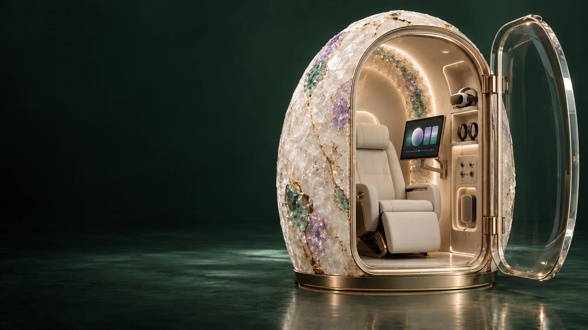
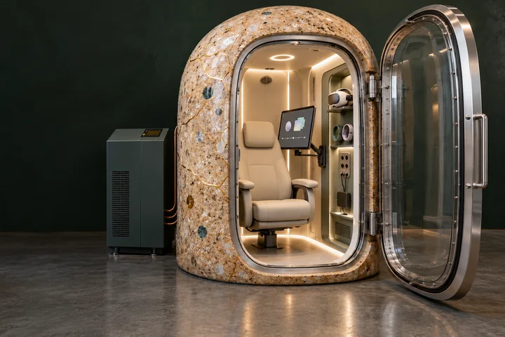
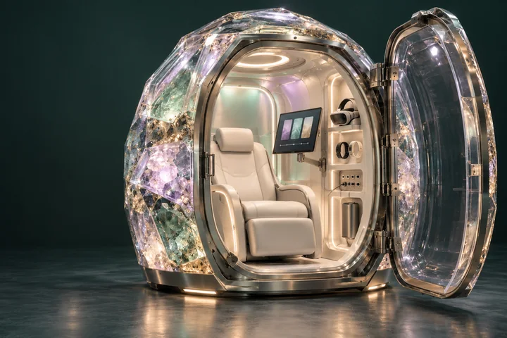
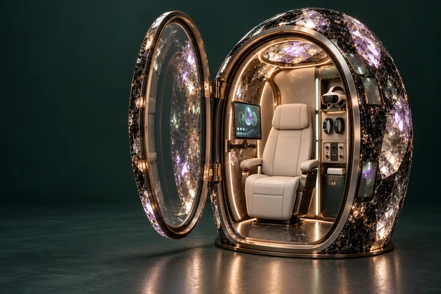

Aura Teacher Training: 60 Days
14 October 2026 · Luke Nathan Hayes
Read original PDFOriginal file checksum
13bb521a9f754aedb2cb88c5af981efa778bd7ec844297d92d7256534ea2418c
AURA GENESIS / GEODE ATLAS
Four hardware pathways for active self-reflection, personal AI and a sixty-day teacher-development programme.
From existing hardware to a future computational shell. Compare materials, compute arrangements and development requirements.

A real seated chamber. A new experience layer.
Discover pathway
Traceable grains. Cast mineral architecture.
Discover pathway
Quartz, fused silica and an ordered material field.
Discover pathway
Computation within the crystalline Geode itself.
Discover pathwaySixty days of studio tasks, review and teaching practice across six subject areas.
Enter the learning atlas140 pages of detailed design. Follow an idea back to the original edition.
14 October 2026 · Luke Nathan Hayes
Read original PDF13bb521a9f754aedb2cb88c5af981efa778bd7ec844297d92d7256534ea2418c14 October 2026 · Luke Nathan Hayes
Read original PDFadd4102f8f7bccef97fbd0b63b06e99aaa89d04f6a807398b8b5f985ff0f549613 October 2026 · Luke Nathan Hayes
Read original PDF9bdd89c91d002ed39f03abf23177f127f5147535133229087b0620e61d826a5430 pages across six subject areas.
30 destinations
No destinations match. Try another word or choose all worlds.
Select a page to open it. Use the search and category filters to narrow the map.
Aura Genesis begins with lived experience: memories, relationships, values, creative interests and possible futures. A personal Aura organises these records for review, correction and further reflection inside the Geode.
The Geode needs usable space for haptic touchscreens or VR/XR, wearable sensors and receiver hardware. The seated participant must be able to reach the controls, move comfortably and review records, with equipment stowed clear of entry and assisted exit.
The source programme proposes sixty sessions containing two qualifying hours at pressure each. Daily activities and teacher development are recorded separately from qualifying pressure time.
Participants can link memories, revised interpretations and activity outcomes to their personal models. With permission, selected records can support community twins, creative works and Earth and solar-system projects.